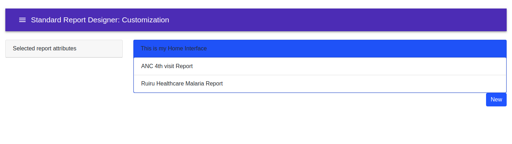

CHAPTER 2:CREATING A NEW STANDARD REPORT¶
HOMEPAGE¶
When the user opens the application, they will be directed to a page where a list of all created reports, if any, will be displayed. At the bottom right of the page, there is a NEW button that allows creation of a new standard report.
SELECTTION OF REPORT ATTRIBUTES¶
On the far left of the new page, there is an area where the user can select all the atttributes they wish to be included in the report. The types of attributes that are expected include:
-Indicators
-Data Elements
-Data Sets
-Organization Units
The selected metadata is what will be used to create tables and charts for visualization. A list of whatever is selected will be displayed on the right side.